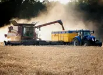
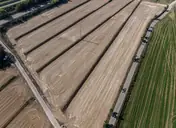
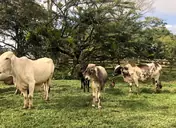

Landing pages
A focused page to introduce one service, campaign or offer with a direct path to your contact channel.
We design modern, mobile-first websites for service businesses that want to look credible, explain what they do and turn visitors into real conversations.
Straightforward scope. Direct communication. Project quotes available in USD.
Clear service information, proof of work and a simple way to request a quote.
Your website should support the way people actually discover, evaluate and contact your business. We keep the design focused on that goal.
A focused page to introduce one service, campaign or offer with a direct path to your contact channel.
Professional multi-section or multi-page sites with services, portfolio, FAQs and calls to action.
Make an outdated or difficult-to-use website clearer, more polished and easier to navigate on mobile.
These are self-initiated concept projects that show how we approach different industries. They are not presented as commissioned client work.

Product-code search, inventory details and a direct quotation flow for time-sensitive purchases.
Explore the concept (PT) ↗
Clear technical presentation and a guided service-request experience for property owners.
Explore the concept (PT) ↗
Field care, emergency information and faster access to the right kind of assistance.
Explore the concept (PT) ↗Share your business, the audience you want to reach and what customers need to do on your website.
We outline the proposed structure, visual approach, deliverables, timeline and a project quote.
Once the scope is agreed, we create a responsive website and prepare it for publication.
Tell us what your business does and what kind of website you have in mind. We can discuss a project remotely and provide a quote in USD.
Based in Brazil · Working remotely with international businesses · No obligation to buy